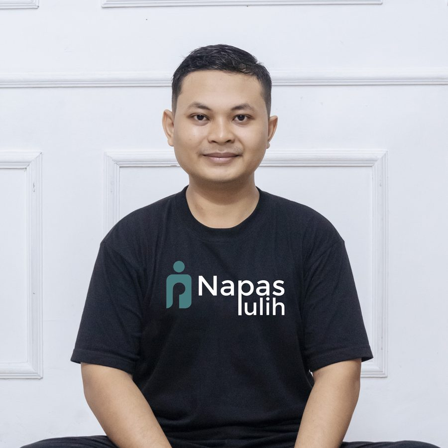

Latihan mandiri
Gratis, langsung di situs iniPilih teknik, atur durasi, lalu ikuti lingkaran napas yang membesar dan mengecil.
- Lima teknik napas berpandu
- Tes jeda napas untuk memantau kemajuan
- Bisa dipakai kapan saja
Banyak dari kita bernapas terlalu cepat, terlalu banyak, dan lewat mulut tanpa sadar. Napas Pulih membantu Anda memperbaikinya dengan latihan sederhana yang bisa dilakukan setiap hari.

Dipandu Dika Duwiyanto, S.Ag., M.Psi., instruktur napas fungsional bersertifikat Oxygen Advantage®.Napas adalah satu-satunya fungsi otomatis tubuh yang juga bisa diatur dengan sengaja. Karena itu, napas menjadi pintu paling mudah untuk menenangkan pikiran dan memulihkan tubuh.
Napas yang pelan dan ringan memberi sinyal aman ke sistem saraf, sehingga rasa cemas lebih mudah reda.
Membiasakan napas hidung, siang dan malam, membantu tidur lebih dalam dan bangun lebih segar.
Beberapa menit latihan di sela kerja membantu pikiran kembali hadir dan tidak mudah terpecah.
Pola napas yang efisien membuat tubuh tidak cepat terengah saat bergerak dan berolahraga.
Pilih teknik, atur durasi, lalu ikuti lingkaran napas yang membesar dan mengecil.
Program terstruktur untuk memulihkan tubuh dan pikiran lewat lima pilar yang dijalankan bersama.
Program napas yang disusun khusus untuk keluhan dan tujuan Anda, didampingi langsung.
PULIH adalah tujuannya: pulih lahir dan batin. Lima pilar ini jalannya, dan kelimanya dijalankan bersama, bukan dipilih salah satu.
Bernapas lewat hidung, pelan, ringan, dan sampai ke perut.
Gerak harian yang sesuai kemampuan tubuh, bukan sekadar olahraga berat.
Hadir pada napas dan diri sendiri, agar pikiran tidak terus berlari.
Tidur dan jeda yang benar-benar memulihkan, bukan sekadar berhenti.
Air dan makanan yang mendukung tubuh memperbaiki dirinya.
Tes jeda napas mengukur berapa lama Anda nyaman menahan napas setelah buang napas biasa. Angkanya menggambarkan pola napas Anda sehari-hari dan bisa dipakai untuk memantau kemajuan latihan.

Dika adalah instruktur napas fungsional bersertifikat Oxygen Advantage® dengan latar belakang Magister Psikologi, konsentrasi Psikologi Perkembangan, dan S1 Tasawuf dan Psikoterapi.
Lewat Napas Pulih, ia memadukan ilmu pernapasan fungsional dengan latihan kesadaran, agar pemulihan tidak berhenti di tubuh, tetapi juga sampai ke batin.
Kirim pesan ke WhatsApp Napas Pulih. Kami kirimkan audio latihan napas dan kabar kelas berikutnya.